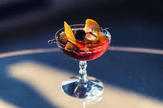

Manhattan

Description
A manhattan is a cocktail alleged to have been created at The Manhattan Club in the mid 1870s.
A simple, easy to make cocktail that tastes great and will make your friends thing you know what you're doing
Ingredients
- 2oz Rye whiskey
- 1oz Sweet vermouth
- 2-4 dashesOrange bitters
Steps
- Step 1: Fill cocktail mixing glass with ice
- Step 2: Pour orange bitters, rye whiskey and sweet vermouth over the ice
- Step 3: Stir cocktail thoroughly, around 10 seconds or until mixing glass begins to frost
- Step 4: Strain cocktail over ice or serve up
- Step 5: Enjoy!